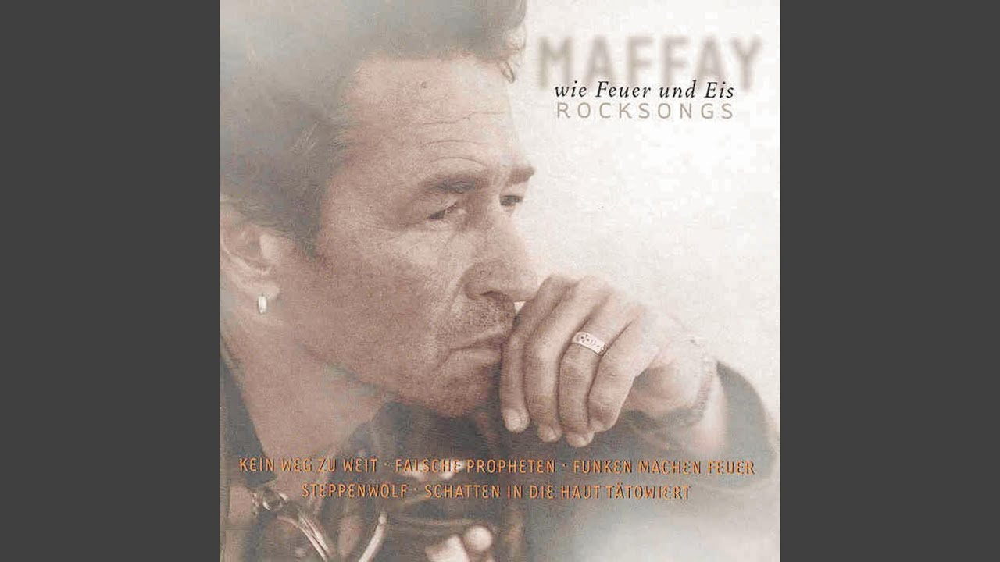
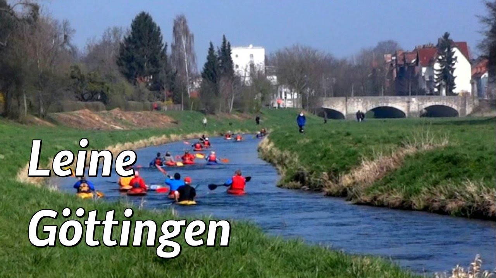

t-léine - aistriúcháin - Gaeilge-Béarla Foclóir - Glosbe
 Glosbe Gaeilge Logáil isteach Cookies help us deliver our services. By using our services, you agree to our use of cookies. Got it Foclóir / Foclóir Gaeilge / Gaeilge-Béarla Foclóir Gaeilge Béarla Gaeilge Béarla T-ghearradh T-inse T-leathadh T-leathalt T-leathalt crosach t-léine T-léine T-léine shnaidhmruaimnithe t-luach criticiúil T-mhullard T-phíosa T-phíosa ribeach t-shliotán t-thástáil T-thonn t.c.
t-léine Béarla i
aistriúchán agus sainmhíniú t-léine , Gaeilge-Béarla Foclóir ar líne
t-léine
Copy to clipboard Details / edit en.wiktionary2016 T-shirt { noun } type of shirt T - léinte , singléid agus veisteanna eile, cniotáilte nó cróiseáilte T - shirts , singlets and other vests, knitted or crocheted Copy to clipboard Details / edit Glosbe Research t-shirt { noun } T - léinte , singléid agus veisteanna eile, cniotáilte nó cróiseáilte T - shirts , singlets and other vests, knitted or crochetedT-léine
Copy to clipboard Details / edit Dbnary: Wiktionary as Linguistic Linked Open Data T shirt T - léinte , singléid agus veisteanna eile, cniotáilte nó cróiseáilte T - shirts , singlets and other vests, knitted or crocheted Copy to clipboard Details / edit englishtainment T-shirt { noun } T - léinte , singléid agus veisteanna eile, cniotáilte nó cróiseáilte T - shirts , singlets and other vests, knitted or crocheted Copy to clipboard Details / edit Dbnary: Wiktionary as Linguistic Linked Open Data football-jersey Copy to clipboard Details / edit Dbnary: Wiktionary as Linguistic Linked Open Data tee { noun } Copy to clipboard Details / edit Glosbe Research tee shirt { noun } Aistriúchán uathoibríoch: t-léineFrásaí chineál céanna i bhfoclóir Gaeilge Béarla. (78)
aerárthach ‘níos éadroime ná an t-aer’ lighter-than-air aircraft an ceart agus an t-éigeart right and wrong an féin fréamhaithe T the rooted L self an féin idéalach T the ideal L self an t Sualainn Sweden an t-Aerchaidéal Air Pump an t-airmheán cumarsáide communications centre an t-Aoire Bear Driver, Herdsman an t-aon mhaide steering oar an t-aonad aslonnaithe is gaire nearest evacuation unit an t-aonad mórchoireanna major crimes unit an t-aonad polasaí ealaíon arts policy unit an t-aonad preasa agus caidrimh phoiblí press and public relations unit an t-aonad um sheirbhísí do chustaiméirí customer service unit an t-aonú uain déag de Dhulhejah eleventh of Dhulhejah an t-aos óg agus an tsochaí young people and society an t-árachaí the insured an t-artaire céiliach celiac trunk, coeliac trunk an t-athraitheach nua ar ghalar Creutzfeldt-Jakob new variant Creutzfeldt-Jakob disease an t-éasc Achilles heel an t-iarThaoiseach the former Taoiseach an t-imbhuailteoir mór hadróin LHC, Large Hadron Collider an t-impire blue emperor, emperor dragonfly an t-impire beag lesser emperor dragonfly, yellow-ringed emperor an t-impire fánach vagrant emperor dragonfly an t-imreoir is bainisteoir player-manager an t-infháltas féideartha is faide ó dháta longest-dated potential receivable an t-ionad is fearr pole position an t-ochslaíoch cáilíochta ablative of respect an t-ochslaíoch modha ablative of manner an t-ochslaíoch tomhais ablative of proportion an t-ochslaíoch uirlise ablative of instrument athshlánaigh an t-óinchiste restore imprest balance béalalt T T-bridle joint buail an t-iarann te strike while the iron is hot c/t r/d, refer to drawer córas an fhéin inspreagtha T the L motivational self system crampa T-bharra T-bar cramp cuir an t-ancaire anchor, drop anchor dhá chois T two T legs Faigh an t-eolas cruinn is déanaí faoin am a sroicheann do bhus an stad seo Get up to the second details of when your bus arrives at this bus stop fírinne an léin truth of suffering fírinne bhunúdar an léin truth of the cause of suffering fírinne scaipeadh an léin truth of the cessation of suffering gléas -T phointe an chromáin DH machine, three-dimensional H-point machine go n-éirí an t-ádh leat good luck gúna léine shirt dress léine dress shirt, shirt, tunic léine Aifrinn alb línitheoireacht ríomhchuidithe (T) computer aided draughting (D) muirear an t-aonad charge per unit ná baintear an t-ainm den bhairín, den bhlonag call a spade a spade oiliúint T-ghrúpa T-group training plaicéad muinchille léine shirt sleeve placket preab an t-eireaball suas síos bob priontáil T D printing ranníocaíocht an t-aonad contribution per unit T -D, D, N, T, north, tera-, three dimensional, three-dimensional, two-dimensional T-achomhal le débhealach T-junction with dual-carriageway T-acomhal T-junction T-alt T-joint T-alt moirtíse agus tionúir mortice and tenon T-joint T-alt táite go filléadach fillet-welded T- joint T-anna copair copper tees T-bhacart T-square T-bhindealán T-shape bandage T-bhíoma T-beam T-bhosca tee box T-dhéadalt T-dovetail joint T-ghaolmhaireacht T-association T-inse tee hinge T-leathalt crosach cross-halving T-joint T-léine shnaidhmruaimnithe tie-dye T-shirt T-mhullard T-bollard T-phíosa ribeach capillary T-piece T-thonn T-wave T&É A&E, Accident and Emergency Unit, Casualty X-Ghathú/T&É X-Ray/A&E níos mó níos lú stem mingAbairtí mar shampla, le "t-léine", cuimhne aistriúcháin
add example ga Aistreoga T- léine KDE40.1 en So, " Daphne " registered under a false name and credit card ga BENVOLIO Dó, dhá; léine agus Smock. QED en With a desire to build on my understanding of this area, I undertook an M.Sc. in psychiatry at McGill University in 2001, focusing my attention in the areas of psychopharmacology and social psychiatry. ga Is féidir leat bhfód sé fiú ar an mbealach shoves stodaí sé isteach i léine . QED en No.We split about six months ago ga Tá mé ag dul a chur ar mo léine air. " QED en The applicant claims that the Court should ga Stuffed mé léine nó dhó i mo mhála cairpéad- aois, tucked sé faoi mo lámh, agus Thosaigh do Rinn Corn agus an tAigéan Ciúin. QED en The elimination half-life is not changed in patients with renal impairment ga Mr Samsa threw an bedspread thar a ghualainn, tháinig Mrs Samsa amach ach amháin ina oíche- léine , agus mar seo sheas siad isteach sa seomra Gregor ar. QED en Sold for #, #!That s damned cheap! ga Chinn sé uair sa leath coileán beag sionnach báite ina poll agus thug sé air sa bhaile in ú ́ bosom ar a léine a choimeád te é. QED en Are you going to give it to me? ga Ní raibh sé go dtí go raibh mé climbed tríd an barr mo léine agus bhí sé ag síneadh amach do the studs go bhfuil cuimhne agam. QED en Youre not getting paid at your job? ga The counterpane Ba bhreacachan, atá lán de corr- parti daite cearnóga beag agus triantáin; agus an lámh a tattooed gach cearn le labyrinth Cretan interminable d fhíor, ní raibh aon dá chuid den cé acu de scáth amháin beacht - mar gheall ar dócha mé a lámh ar a choinneáil ar an bhfarraige unmethodically i ghrian agus scáth, rollta a muinchillí léine neamhrialta suas ag amanna éagsúla - seo a lámh céanna, a rá liom, d fhéach le haghaidh gach an domhain mar stiall de go chuilt bhreacachan céanna. QED en They gave you away when I shot that cop 1 leathanach Torthaí. Aimsíodh 10 meaitseáil abairt abairtí t-léine.2 fáil in ms.Chuimhní aistriúcháin atá cruthaithe ag an duine, ach ailíniú trí ríomhaire, a d fhéadfadh a botúin ina chúis. Tagann siad ó fhoinsí go leor agus nach bhfuil a sheiceáil. Bí rabhadh. cuir aistriúcháin cuir aistriúcháin Links FoclóirGach foclóirí:
Ngach ceann de theangacha
Transliteration
Interface language Advanced Athruithe is déanaí
Uasluchtaigh foclóir
Glosbe API
Reader FAQ
Editor FAQ
About Maidir Linne
Comhpháirtithe
Blog
Teagmháil
Terms: en pl
Privacy policy: en pl
